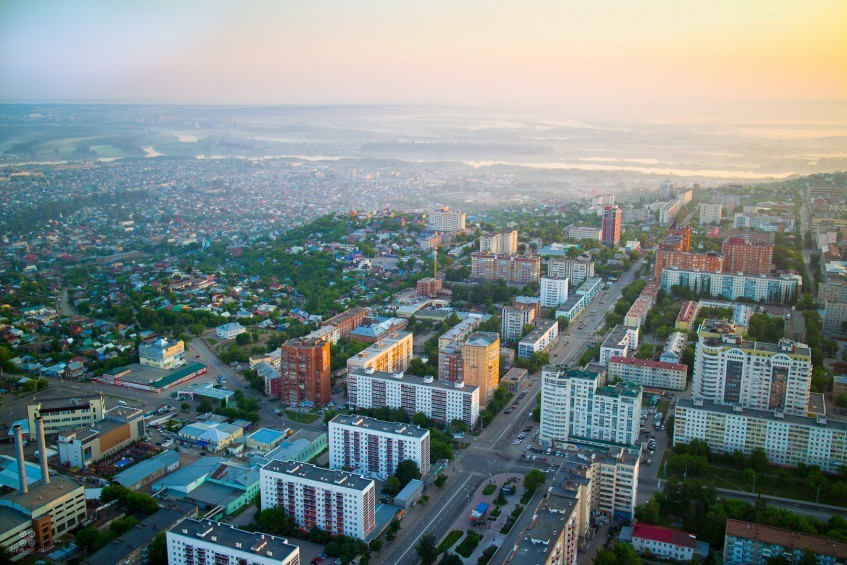
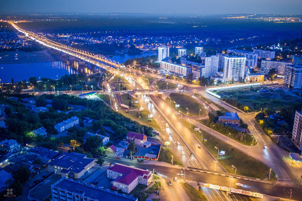
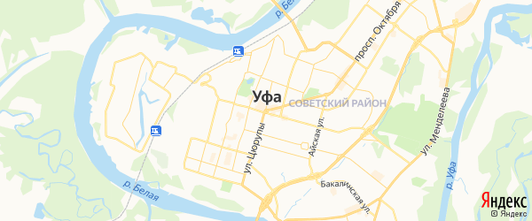

Уфа

Уфа́ — один из крупнейших городов России, столица Республики Башкортостан, административный центр Уфимского района, в состав которого не входит. Город республиканского значения, образует муниципальное образование город Уфа со статусом городского округа. Входит в число крупнейших экономических, культурных и научных центров Российской Федерации.

На 1 января 2019 года по численности населения город находился на 11 месте из 1115 городов Российской Федерации. Также является 31-м городом Европы по численности населения. Численность населения Уфимской агломерации (городской округ город Уфа, муниципальные районы Уфимский, Благовещенский, Чишминский, Иглинский, Кармаскалинский и Кушнаренковский районы) составляет 1 454 053 чел. (2017). С 2008 года сложился естественный прирост населения.

Расположен на берегу реки Белой, при впадении в неё рек Уфы и Дёмы, на Прибельской увалисто-волнистой равнине, в 100 км к западу от хребтов Южного Урала. Лежит преимущественно в междуречье рек Белой и Уфы, на Уфимском полуострове. Площадь города составляет 707,93 км². Протяжённость с севера на юг 53,5 км, с запада на восток 29,8 км. Уфа — пятый по площади и по протяжённости город России. Уфа — самый просторный город-миллионер России. В 2010 году на одного жителя приходилось 698 м² городской территории.